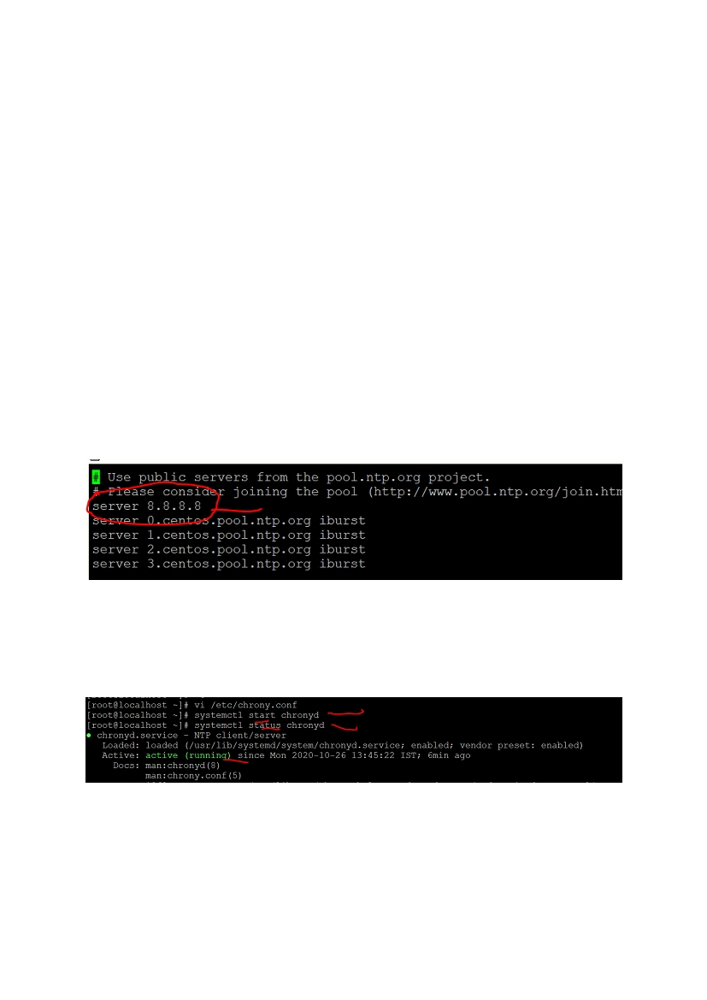
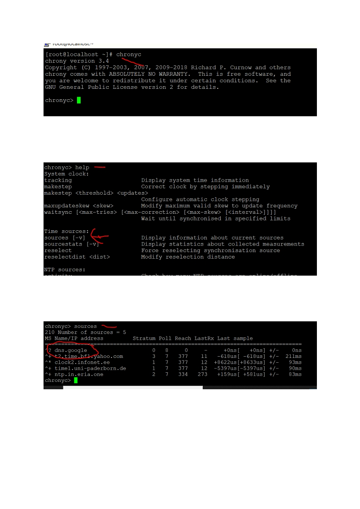

Chrony
Purpose – Time Synchronization
Package name – chronyd
Config file /etc /chrony.conf
Log file /var/log/chrony
Service – systemctl start /restart chronyd
Program command – chronyc
Step 1 -> Install the package : - yum install -y chrony
Step 2 go to /etc/chrony.conf file add google server address
vi /etc/chrony.conf
add below line
server 8.8.8.8
and save the file
Step 3 – start the chronyd service
systemctl start chronyd
step 4 : -check the status of chronyd service
systemctl status chronyd
Step 5 : to check our configuration is working or not .we get respone from google server
Type chronyc
We ll get chronyc command prompt

Step 6
Type -- > help at chronyc command prompt
Step 7 : sources command will display the current source for our chrony
Type sources on chronyc command prompt